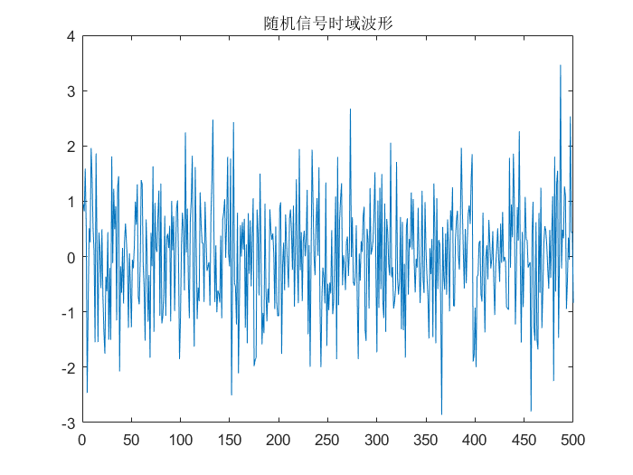
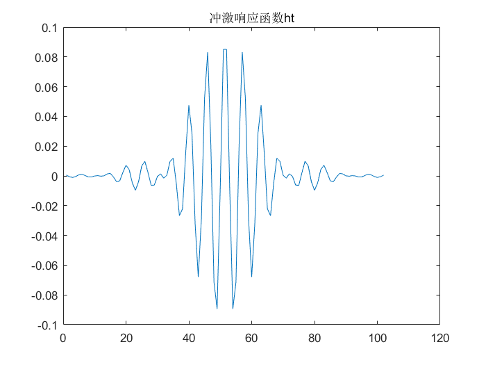
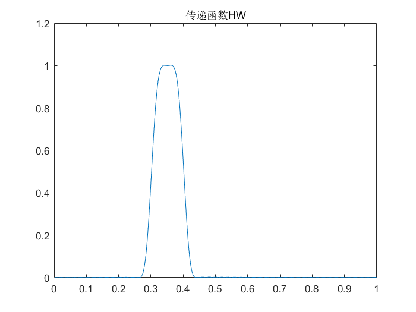
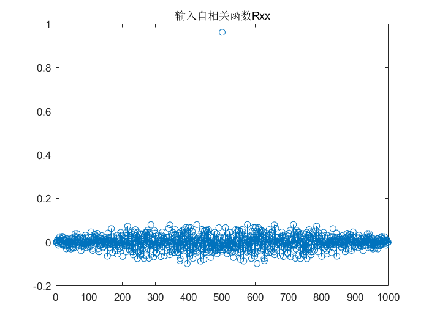
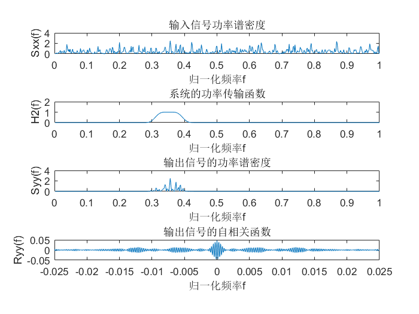

task2_3
Contents
配置环境
clear all;
close all;
clc;
产生高斯白噪声
N=500;
xt=random('norm',0,1,1,N);
figure,plot(xt);
title('随机信号时域波形')

设计带通滤波器
ht=fir1(101,[0.3 0.4]);
figure,plot(ht)
title('冲激响应函数ht')

传递函数
HW=fft(ht,2*N);
figure,plot((1:N)/N,abs(HW(1:N)));
title('传递函数HW')

估计输入信号的自相关和功率谱
Rxx=xcorr(xt,'biased');
figure,stem(Rxx)
title('输入自相关函数Rxx')

功率谱
Sxx=abs(fft(xt,2*N).^2)/(2*N);
系统求解 频域求解：输出功率谱
HW2=abs(HW).^2;
Syy=Sxx.*HW2;
时域求解：输出自相关
Ryy=fftshift(ifft(Syy));
图形展示
w=(1:N)/N;
t=(-N:N-1)/N*(N/20000);
subplot(4,1,1);plot(w,abs(Sxx(1:N)));
xlabel('归一化频率f');ylabel('Sxx(f)');title('输入信号功率谱密度');
subplot(4,1,2);plot(w,abs(HW2(1:N)));
xlabel('归一化频率f');ylabel('H2(f)');title('系统的功率传输函数');
subplot(4,1,3);plot(w,abs(Syy(1:N)));
xlabel('归一化频率f');ylabel('Syy(f)');title('输出信号的功率谱密度');
subplot(4,1,4);plot(t,Ryy);
xlabel('归一化频率f');ylabel('Ryy(f)');title('输出信号的自相关函数');
